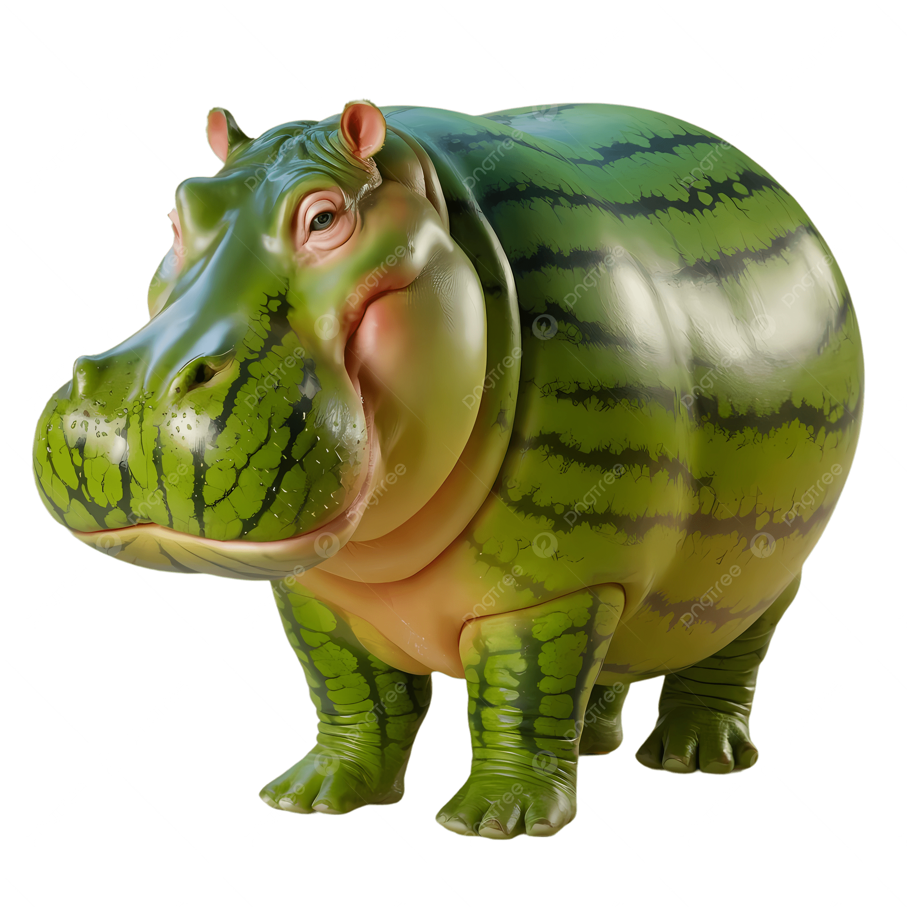

Обо мне

Бегемот — одно из самых крупных животных на планете. Взрослый самец может весить до 4 тонн и достигать 5 метров в длину. Несмотря на грузный вид, бегемоты отлично плавают и могут задерживать дыхание под водой на несколько минут. Большую часть дня они проводят в реках и озёрах, спасаясь от африканской жары.
Мои работы

Бегемоты — одни из самых интересных и загадочных животных на Земле. Они обитают в странах Африки к югу от Сахары и проводят большую часть времени в воде. Несмотря на то что бегемоты выглядят медлительными и неуклюжими, на суше они способны развивать скорость до 30 километров в час — быстрее среднего человека. Бегемоты — территориальные животные и очень агрессивны при защите своего участка. Самцы метят территорию с помощью хвоста, разбрасывая навоз в разные стороны. Звуки, которые они издают, слышны на несколько километров вокруг. Бегемоты живут группами по 10–30 особей, и каждая группа имеет своего доминантного самца, который охраняет стадо и водную территорию. Интересно, что бегемоты общаются между собой как под водой, так и над её поверхностью одновременно. Детёныши бегемота рождаются прямо в воде и умеют плавать раньше, чем ходить. Мать очень заботливо охраняет своего детёныша и может напасть на любого, кто приблизится. Продолжительность жизни бегемота в дикой природе составляет около 40 лет, а в неволе они живут ещё дольше. Бегемоты находятся под угрозой исчезновения из-за браконьерства и уничтожения естественной среды обитания.
Связаться со мной

Связь через бегемотов в Африке.